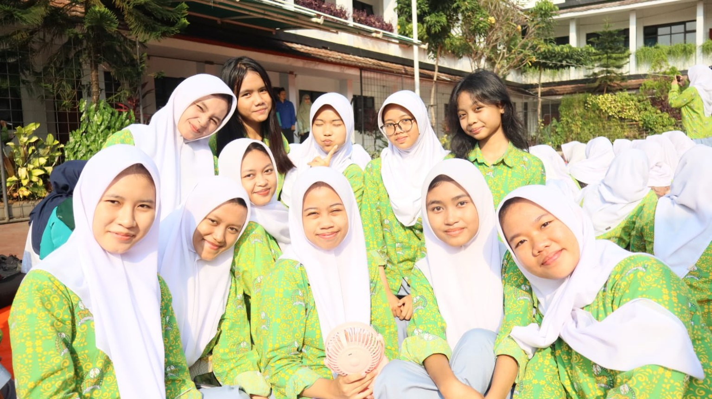
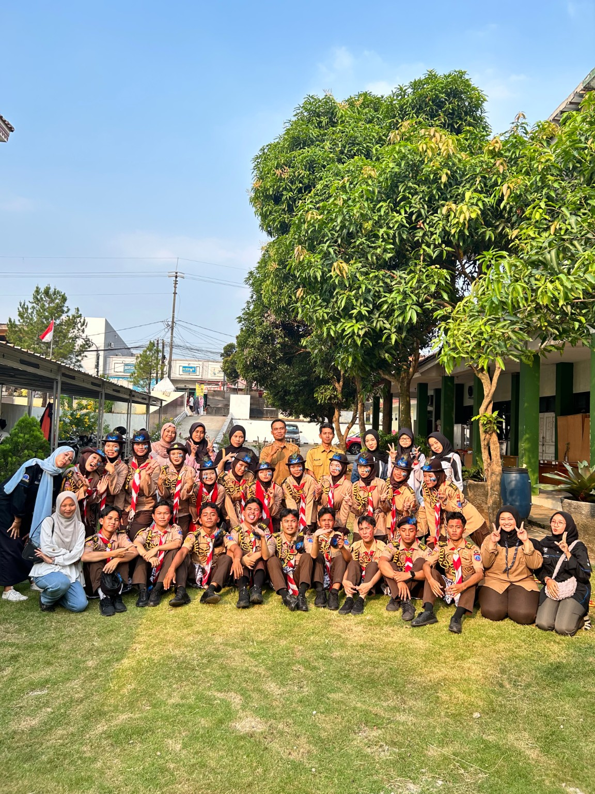
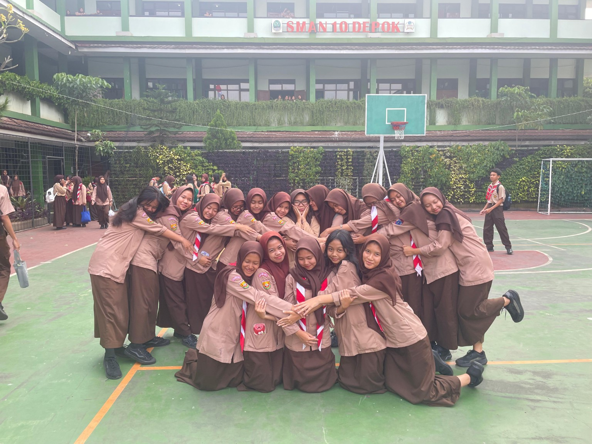
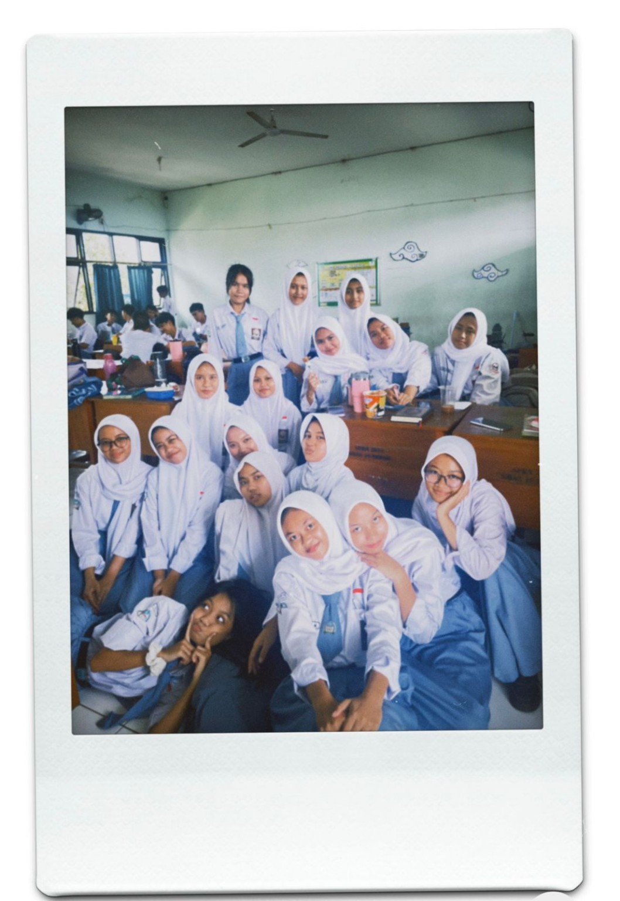
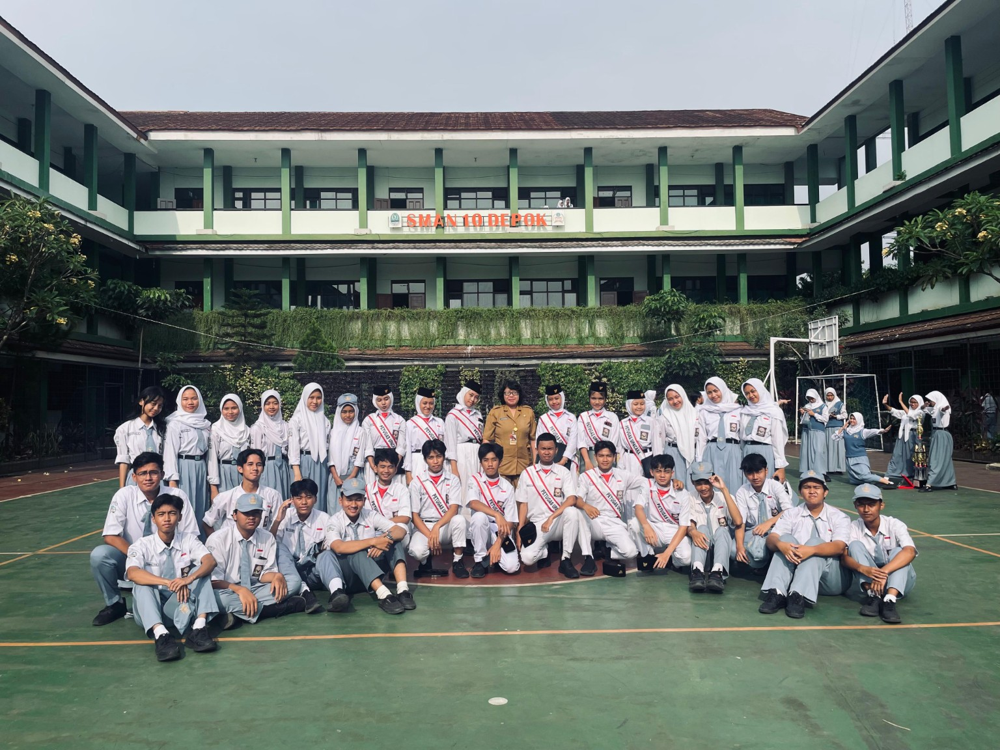
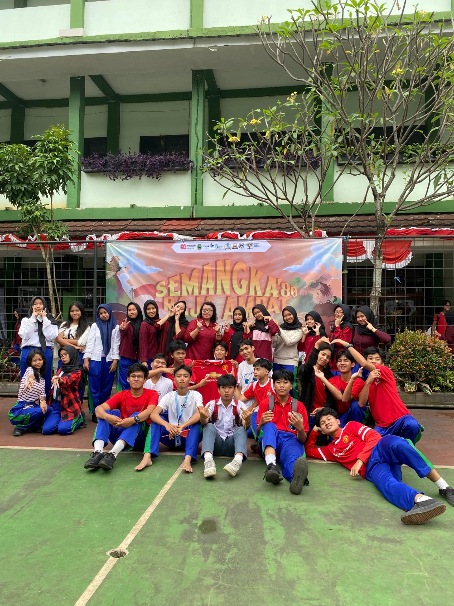
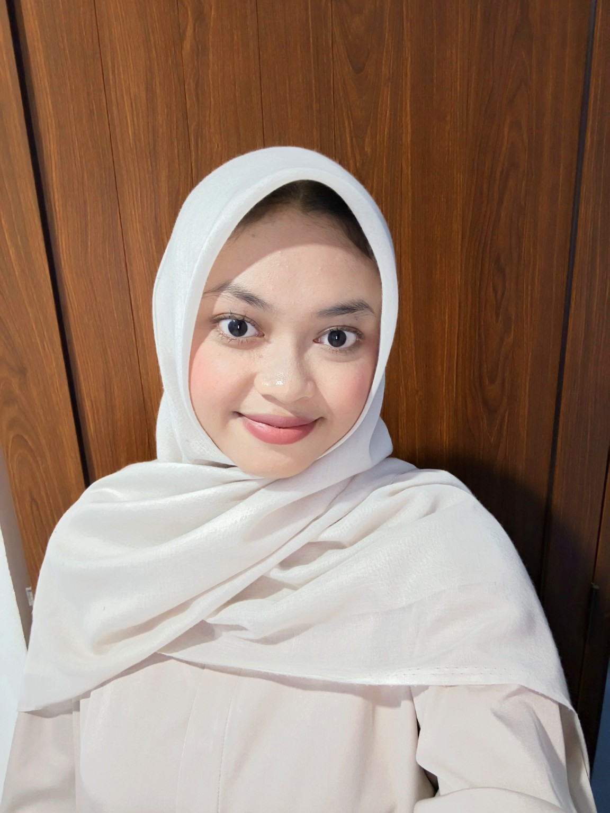

04 — Galeri
Moments to keep.
Beberapa momen kegiatan dan kebersamaan yang ingin saya simpan sebagai kenangan.







Ruang kecil untuk mengenal saya lebih dekat, melihat perjalanan pendidikan, mengenal kelas, sekolah, dan menyimpan beberapa momen berharga.
Beberapa hal sederhana tentang diri saya, minat, hobi, pendidikan, dan cita-cita.

Halo, saya Shafira Nur Maidah. Saya adalah siswi kelas XII.2 jurusan Teknik di SMA Negeri 10 Depok. Saya senang memasak, mendengarkan musik, mengikuti kegiatan Pramuka, dan memiliki cita-cita menjadi seorang aktor.
Tempat saya belajar, bekerja sama, dan membuat banyak kenangan bersama teman-teman.
Total Siswa
Laki-laki
Perempuan
Teknik
Wali kelas XII.2 Teknik yang membimbing dan mendampingi kelas.
Ketua kelas XII.2 Teknik.
Wakil ketua kelas.
Sekretaris kelas.
Sekretaris kelas.
Sekolah tempat saya menempuh pendidikan, berkembang, belajar, dan menemukan berbagai pengalaman baru.
“Mewujudkan lulusan yang berakhlak mulia, unggul dalam prestasi dan inovasi, berbudaya lingkungan serta berwawasan global.”
Beberapa momen kegiatan dan kebersamaan yang ingin saya simpan sebagai kenangan.





